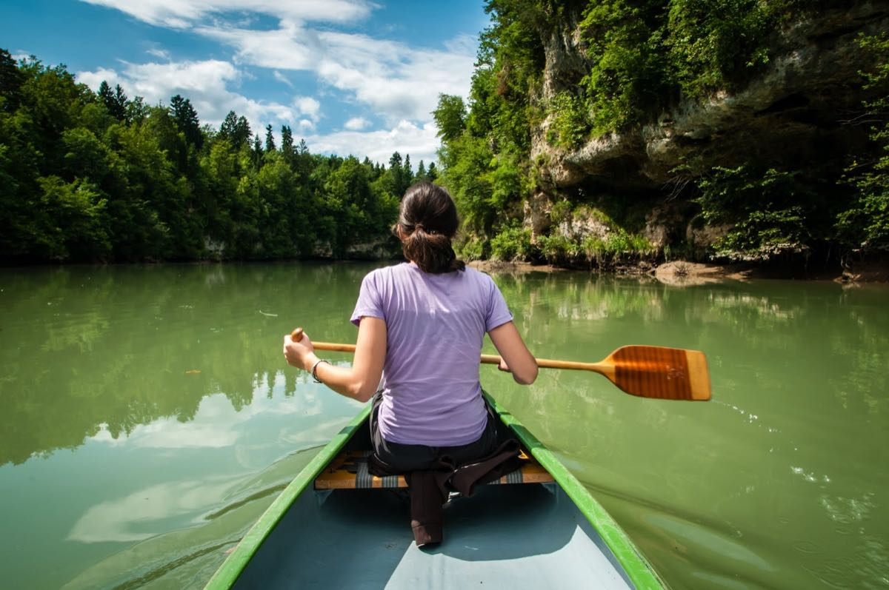
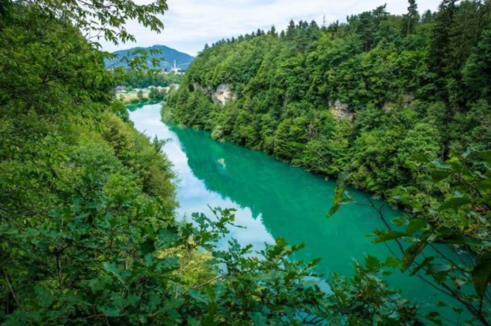
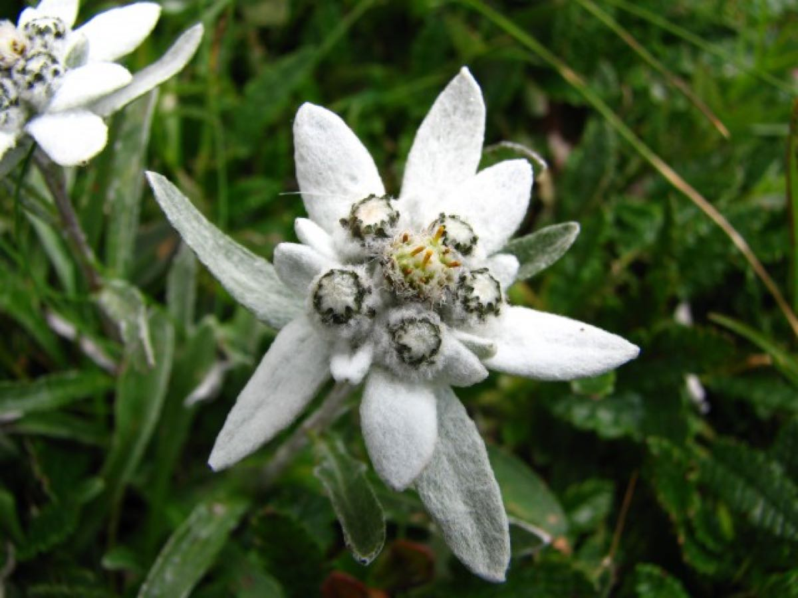
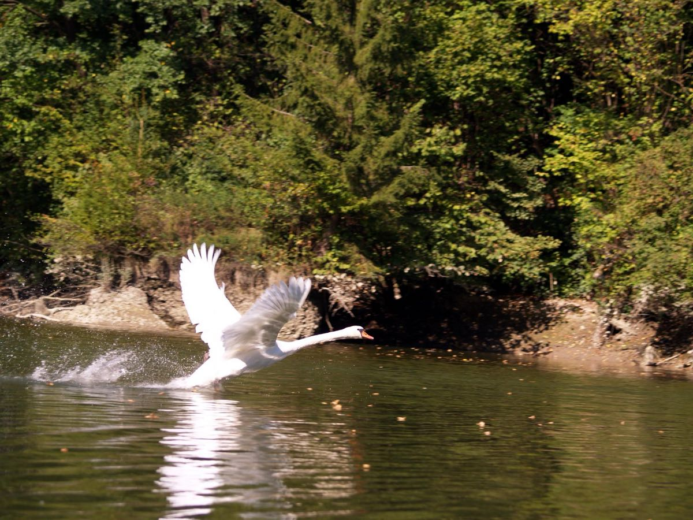

V ribiški brunarici Pri krivi ščuki v Prašah lahko pri prijazni oskrbnici najamemo sicer edini čoln na vesla in potem odrinemo proti Kranju. Med Prašami in Trbojami na drugi strani je jezero najširše, a še preden se dodobra ogrejemo, se pripeljemo v prvi, spodnji del tesni.
Levo in desno skalovje, na desni, sončni strani obraslo z bori. Mir, tihota, niti enega čolna, nobenega kajaka ali kanuja, nobenega ribiča. Plujemo in se oziramo po skalovju za planikami…
Po slabi uri vztrajnega veslanja se pri vasi Breg jezero razširi in proti severu se odpre pogled na Grintovce. Pod ribiško brunarico Breg, kjer tudi oddajajo čolne, je preko Save napet gumijast zadrževalnik vejevja in vsega drugega, kar plava po vodi. Tega začuda pravzaprav ni veliko. Tu je treba čoln voditi skrajno po levi strani struge. Ta predel od Brega navzgor je tudi najbolj divji: čeri so številne, nekaj je tudi pravcatih
odtočkov, s katerih rastejo visoke smreke, opazimo lahko tudi nekaj parov plašnih labodov, ki gnezdijo v samotnih kotičkih; rac je kar veliko.
Na zbiljskem jezeru je vse polno belih labodov, ki se prav neusmiljeno pretepajo za življenjski prostor. Tu so tudi stene najvišje. Tu so nekdaj, ko še ni bilo elektrarne v Mavčičah, hodili v hudem deževju opazovat silno savsko vodovje, ki je zastrašujoče grmelo v kanjon.
Ko priveslamo iz kanjona, je najlepši del za nami. Levo je Športni park Zarica, malo naprej opazimo hale nekdanje tovarne Planika, naravnost spredaj pa Šmarjetna gora in čez nekaj časa tudi Stol. Zdaj že nekaj časa veslamo proti toku Save in kmalu smo pod Delavskim mostom, pred sabo opazimo peneče se vode prvih brzic.
Se nadaljuje,…

Veslanje, svojevrstno doživetje

Kanjon Zarice

Planike v skalovju soteske

Labodji ples